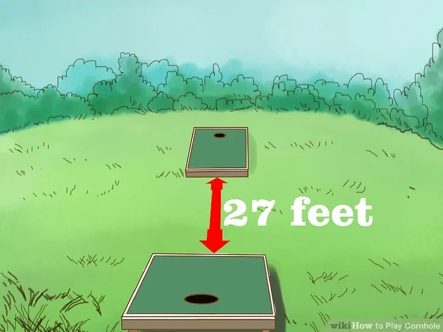
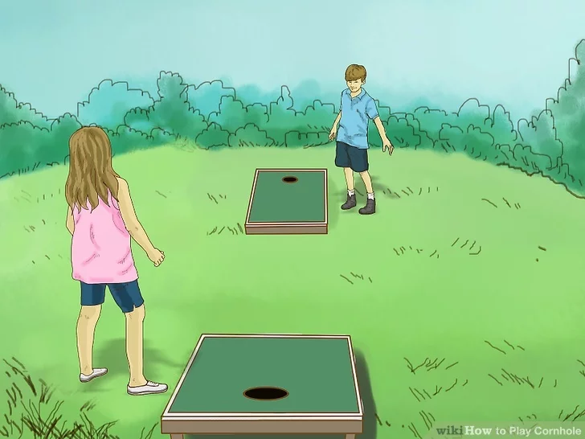
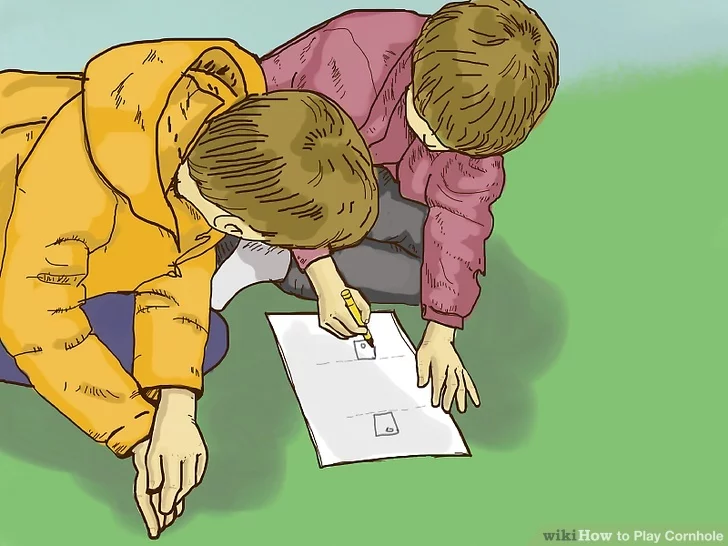
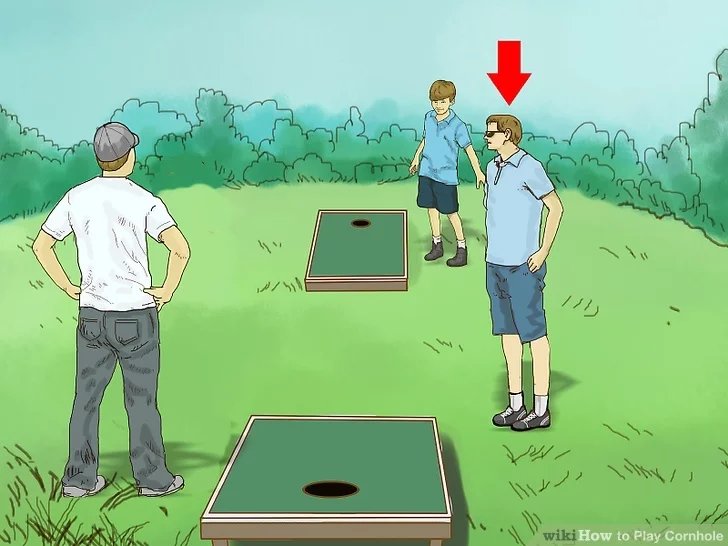

Cornhole, sometimes called corn toss, bean bag toss, or baggo, is a lawn game popular in America. In this game, two teams throw bean bags into the holes of a goal board positioned on the ground to score points. With a few supplies and tools, you can make a Cornhole set of your own, or you could buy the game pre-made at a store. Either way, once you lay the groundwork for the game, it won't be long before you begin playing, and there are even ways you can improve your technique.
Download Instructions
For Saving Instructions Offline Click The Button Below
You'll need two sets of bean bags, with each set having four bags apiece. It's a good idea to choose two colors for your bean bags, one color for each team. This way, you can easily differentiate teams. Additionally, each team must have one goal board per team.[1]
Official Cornhole goal boards are 2 by 4 feet (0.61 by 1.22 m), with a hole 6 inches (15.24 cm) wide centered 9 inches (22.9 cm) from the top of the board. Larger or smaller boards might not work as well.
Bean bags larger or smaller than 6 inches by 6 inches (15.24 cm by 15.24 cm) may make the game too difficult or too easy.
You can frequently find and buy pre-made Cornhole games at general retailers, sports stores, and sporting goods stores.
2
Arrange the team goals.

Team goals should be set up on level ground opposite from each other. The front of each goal should be 27 feet (8.2 m) apart from the other. The goal hole of each board should be positioned away from the opposing board.
You may want to orient your playing area to face north and south. This way, the sun will have less of a negative impact on play.[2]
3
Gather players for your Cornhole game.

You can play Cornhole with two or four players. Players should be divided evenly into two teams. Two-player teams will have a player at each goal board, and single person teams will always throw from the same board.
The rules of Cornhole are relatively simple. If you're in need of players for your game, even complete beginners can pick it up quickly and enjoy playing.[3]
4
Explain the rules. Each goal board begins with four bean bags apiece.

The players at each goal board should alternate throwing bean bags at the opposite goal board until all four are thrown on one side. Then the opposite board players should do the same. This is repeated until a team reaches 21 points, total.
All throws should be made from behind the front of the board in an imaginary 3-foot ( .91 m) wide pitcher's box that extends the entire length of both sides of the board.
Bean bags that make it through the hole in the other team's goal board are worth three points. Bags that touch and remain on the board earn a single point. Bags knocked into the hole by another bag are also worth three points.[4]
5
Choose a non-player judge to keep participants honest.

When the competition is heated, players may argue about whether or not something was a foul. Because the Cornhole playing field is relatively large, it can be difficult for opposing teams to clearly distinguish fouls. A judge will help prevent this.
Although a judge is recommended for serious players and tournaments, a judge is not required to play this game.